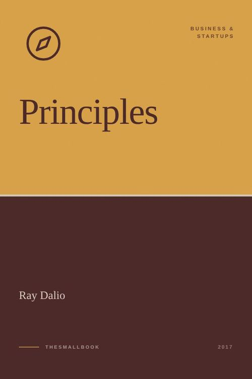

Why Did Uninor India Fail?
The licence earthquake
What happened
Uninor brought Telenor's low cost discipline to India's mobile price war and won millions of subscribers quickly. It looked built for exactly the market it entered. The Supreme Court cancelled 122 telecom licences in the 2G scandal in 2012, including Uninor's path in several circles. Telenor fought, restructured and later exited India, but the original Uninor ambition died in the legal rubble.
The fatal mistake
Treating licence risk as paperwork in a sector where permission is the asset.
The lesson
When the state grants your right to operate, legal diligence is product strategy.
The antidote book

Pain + Reflection = Progress. Turn every mistake into a written principle, embrace radical truth, and let the best ideas win.
READ THE SUMMARY OPEN INTERACTIVE BOOKQuestions people ask about Uninor India
Why did Uninor India fail? Treating licence risk as paperwork in a sector where permission is the asset.
How much was lost? Original brand wound down after licence loss
What is the lesson? When the state grants your right to operate, legal diligence is product strategy.
Uninor India kyun fail hua? In simple English: Treating licence risk as paperwork in a sector where permission is the asset. The cost was Original brand wound down after licence loss.
Keep digging
More business failures · Open the full Graveyard
Read the antidote book summary: Principles
Related failures
- Why did Skype fail? 2025 · The Verb That Lost a Pandemic It Should Have Owned
- Why did JOANN fail? 2025 · The Craft Shelf Lost Its Footing
- Why did rue21 fail? 2024 · Three Bankruptcies Were the Market's Answer
- Why did Zee-Sony Merger fail? 2024 · A $10B Media Titan Blown Apart by Promoter Egos
- Why did Tupperware fail? 2024 · The Party Ended After 78 Years
- Why did The Body Shop fail? 2024 · The Ethical Beauty Pioneer That Couldn't Outlive Its Founder's Shadow
Questions people ask about Uninor India
Why did Uninor India fail? Treating licence risk as paperwork in a sector where permission is the asset.
How much was lost? Original brand wound down after licence loss
What is the lesson? When the state grants your right to operate, legal diligence is product strategy.
Uninor India kyun fail hua? In simple English: Treating licence risk as paperwork in a sector where permission is the asset. The cost was Original brand wound down after licence loss.
Keep digging
More business failures · Open the full Graveyard
Read the antidote book summary: Principles
Related failures
- Why did Skype fail? 2025 · The Verb That Lost a Pandemic It Should Have Owned
- Why did JOANN fail? 2025 · The Craft Shelf Lost Its Footing
- Why did rue21 fail? 2024 · Three Bankruptcies Were the Market's Answer
- Why did Zee-Sony Merger fail? 2024 · A $10B Media Titan Blown Apart by Promoter Egos
- Why did Tupperware fail? 2024 · The Party Ended After 78 Years
- Why did The Body Shop fail? 2024 · The Ethical Beauty Pioneer That Couldn't Outlive Its Founder's Shadow
They paid full price. You get the lesson in simple English.